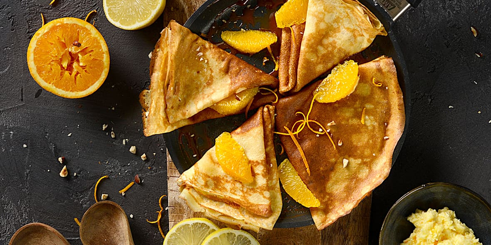

PATES A CREPES
INGRERDIENTS
250g de farine
3 oeufs
50cl de lait
50g de beurre fondu (froid)
1 pincée de sel
1 peu d'huile ou beurre pour la cuisson
2 CS de sucre
1 CS d'extrait de vanille ou rhum, fleur d'oranger
PREPARATION
- verser la farine tamisée dans un saladier et mélanger avec le sel (et le sucre si vous faites des crêpes sucrées).
- faire un puits au centre puis verser les oeufs légèrement battus
- verser progressivement le lait en fouettant pour obtenir une préparation lisse et sans grumeaux. je conseille vivement de passer la préparation au chinois pour éliminer les grumeaux éventuels.
- ajouter le beurre fondu froid, mélanger et laisser reposer de 30 minutes à 1 heure à température ambiante ou au frais. cette étape est indispensable pour obtenir une pâtes épaisse et souple , qu'elle puisse s'étaler correctement et d'obtenir des crêpes bien moelleuses.
- beurrer légèrement une poêle à crèpes ou anti-adhésive et faire chauffer à feu moyen.
- verser une petite louche de pâtesdans le centre de la poêle et le tourner sur elle-même rapidement pour étaler la pâte finement sur toute la surface.
- laisser cuire jusqu'à ce que les bords se détachent.
- retourner la crêpe à l'aide d'une spatule et la faire cuire sur l'autre face quelques instants jusqu'à ce que la crêpe soit légèrement dorée.
- attention à ne pas faire brûler la crêpe, c'est assez rapide.
- glisser la crêpe sur une assiette et renouveler l'opération jusqu'à épuissement de la pâte.
BON APPETIT

chef simon